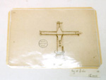
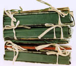
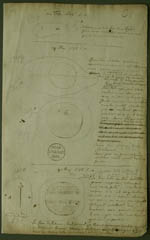
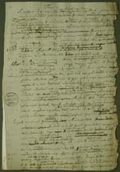
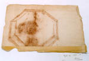
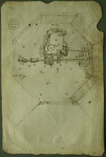
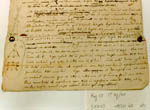
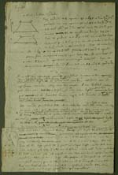
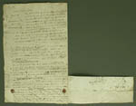

Christiaan Huygens. Facetten van een genie
De manuscripten
8 april 31 mei 2004
Tentoonstelling in de Universiteitsbibliotheek Leiden
11. Conservering van de losse papieren
Bij de losse papieren zijn de bewaaromstandigheden en het gebruik nog veel meer dan bij de brieven verantwoordelijk voor de ontstane schade. Ze werden in grote stapels bewaard in (vaak door de redacteurs van de Oeuvres complètes toegevoegde) omslagen en portefeuilles die vaak net te klein waren en onvoldoende bescherming boden. De opgetreden randschade is een grote bedreiging voor de tekst omdat Huygens zijn papieren van rand tot rand volschreef
De redacteuren zijn zeer vrij geweest in het aanbrengen van potloodaantekeningen en het omcirkelen van illustraties die ze wilden opnemen. Deze markeringen worden bij de conservering gehandhaafd, omdat ze een onlosmakelijk onderdeel van de geschiedenis van de Huygenspapieren zijn geworden. De negentiende-eeuwse omslagen zijn van inferieure kwaliteit en worden nu gescheiden bewaard. Ook andere materialen die de papieren kunnen aantasten worden verwijderd, zoal splitpennen en plastic hoesjes.
Vanwege hun slechte conditie vergen de papieren een intensieve behandeling; blad voor blad worden ze hersteld.
|  | 11.1. Foto’s van de oude berging en van de huidige berging. |
|  | |
|  | 11.2 Bladen uit de bundel ‘Chartae
astronomicae’. [HUG 28] –– De potloodaantekeningen in de tekst en om de tekeningen zijn van de editeurs. Bij het droogreinigen van de papieren worden die gespaard. |
|  | 11.3. Blad uit de bundel ‘De motu
corporum ex percussione et alia’. [HUG 26 A] –– Dit blad is nog niet behandeld. Door Huygens’ manier van schrijven (zonder rechter marge) houdt bijna elk papierverlies ook tekstverlies in. |
|  | 11.4. Blad uit de bundel ‘Chartae
astronomicae’. [HUG 28] –– Dit blad was aan achterzijde versterkt met een dikke tape. De tape is verwijderd en het papier is versterkt met Japans papier en stijfsel. – De foto toont de toestand voor de behandeling. . |
|  | |
|  | 11.5. Bladen uit de bundel ‘Chartae
mathematicae’. [HUG 25] –– De correctie aan onderzijde van f.40 is waarschijnlijk door Huygens zelf met behulp van zegellak vastgeplakt. Nadat dat later los was gegaan is de correctie met splitpennen op zijn plaats gehouden. Die zijn nu verwijderd omdat de opdikking, de scherpe randen en chemische reacties van het metaal ongunstig zijn. De correctiestrook is nu scharnierend met Japans papier vastgezet, iets hoger dan de oorspronkelijke positie omdat het uitstekende papier heel kwetsbaar was. Al deze informatie wordt in de restauratiedocumentatie vastgelegd. De foto toont de situatie voor de behandeling. |
|  | |
|  |
| vorige pagina | volgende pagina |